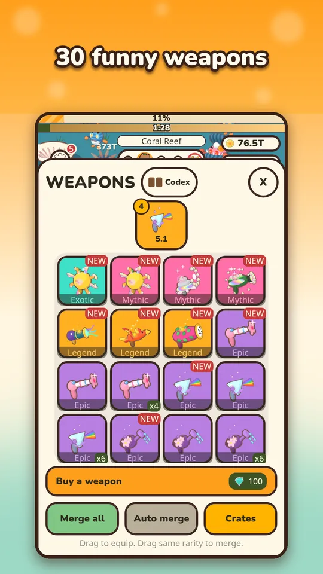

Is Capy Kingdom worth playing? I built it, so I am biased, but I will try to answer the way I would want a stranger to answer: what the game is, what it asks of you, and who should probably skip it. Capy Kingdom: Idle Shooter is a free Android game about a very calm capybara and a lot of very grumpy critters.
What Capy Kingdom actually is
It is an idle incremental shooter you play with one thumb. The capybara and its pets fight on their own, coins roll in, and you spend them on bigger numbers. Stages have 5 steps, and the fifth is a boss with a timer. There are 10 biomes, from Hot Springs to Sky Islands, with 40 grumpy critters and 16 named bosses that each have their own tricks, such as dodging, summoning minions or enraging near the end of the timer.

If you have never played this genre, the idle shooter explainer covers the basics in more detail.
What you get
- Weapons and pets to collect, with the odds of every crate and egg shown before you open it.
- Merging of identical items into stronger ones, with locked and equipped items protected.
- Offline earnings, a Diamond Spring that fills with gems, and pet trips from 30 minutes to 8 hours.
- Rebirth for Golden Yuzu and a Yuzu Tree of 44 permanent perks.
- Daily missions, a login calendar, a daily Boss Rush with a new twist, achievements, 13 hats and a free Spring Festival.

How it makes money, honestly
I set rules for myself before building it. The game is free to play. Ads are optional rewarded ads only: you choose to watch one for a bonus, and no ads pop up in your way. There is a Remove Ads purchase, and it makes every rewarded bonus instant instead of removing the bonuses. Other optional purchases are gem packs, a starter bundle and permanent boosts. Nothing is required to progress. There is no account and no sign-up, and your progress is saved on your device.
I also tuned the economy so that boosts help rather than decide. In this kind of game, doubling your income moves you forward by a handful of stages, not by a wall of difference. That is an effect of how the economy scales, and it is why I am comfortable recommending the game to people who will never spend a cent.
How much time it asks
Very little, if you want. Offline earnings are capped at 8 hours at the start, so one or two check-ins a day are enough. A short routine of collecting coins, claiming the Diamond Spring and sending pets on a trip takes a couple of minutes. If you want to play actively, there is always a boss to try and a collection to improve. My beginner tips show a good first-day routine.

Where it can disappoint
Idle games are not for everyone, and I would rather say so than hide it. Skip Capy Kingdom if:
- You want to aim and dodge. The shooting is automatic by design.
- You want a story or a hard action challenge. The appeal is calm progress, soft art and big numbers.
- Walls frustrate you. You will hit bosses you cannot beat yet, and the answer is usually upgrades, merging or a rebirth, as I describe in the rebirth guide.
Also, the late game is a long game. The economy is built around a climb of thousands of stages, which means growth slows down as you progress. If that sounds like a feature, you will probably be happy.
What a typical week feels like
The first day is the fastest: you buy upgrades every few seconds, open your first crates, meet your first boss and probably lose to it. By the second or third day you are checking in a few times, merging duplicates, and thinking about your first rebirth. After that, the rhythm settles into a loop of climbing, hitting a wall, resetting for Golden Yuzu and spending it in the Yuzu Tree. The daily extras keep it fresh: missions, the login calendar, and a Boss Rush that comes with a new twist each day, such as a round where your weapon is disabled and pets do the work. None of it is mandatory.

Who it is for
It suits people who like numbers going up, short breaks, collecting and merging, and games that respect a limited amount of time. It is also available in 12 languages: English, Dutch, Spanish, French, German, Portuguese, Japanese, Korean, Simplified Chinese, Russian, Italian and Turkish. If you want to optimize rather than just play, the upgrade order article has my recommendations.
My honest verdict
If you like calm, collectible, number-driven games and you do not mind that the shooting plays itself, I think it is worth the download, because it costs nothing and asks for no account. If you want fast reflexes or a story, it is not that game. Either way, you will know within a day, and the same careful approach to fairness runs through everything I make.
Try it
The game costs nothing to try, and there is no account to create. Get Capy Kingdom on Google Play and decide for yourself after a few minutes with the capybara.
Frequently Asked Questions
Is Capy Kingdom free to play?
Yes. Capy Kingdom is free, with optional rewarded ads you choose to watch for a bonus, and optional purchases such as gem packs, a starter bundle and permanent boosts. Nothing is required to progress, and no ads pop up in your way.
Does Capy Kingdom need an account?
No. There is no account and no sign-up. Your progress is saved on your device. The game also includes a Support panel in Settings where you can contact the developer.
What languages does Capy Kingdom support?
Twelve: English, Dutch, Spanish, French, German, Portuguese, Japanese, Korean, Simplified Chinese, Russian, Italian and Turkish.